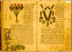

Dioscurides,
Kitab al-H
Dioscurides van Anazarbus schreef zijn werk De materia medica rond het jaar 65 van onze jaartelling in het Grieks. Het was zijn bedoeling om een beschrijving te geven van al die planten die een medische toepassing hebben. In de dedicatie aan zijn vriend en collega Areius van Tarsus schreef hij dat hij de meeste planten zelf had geobserveerd en dat hij over die zaken die hij niet uit eigen waarneming kende nauwgezet informatie had ingewonnen. Dioscurides zette zich daarmee af tegen hen die louter op basis van horen zeggen over natuurlijke historie schrijven. Iets verder maakte hij ook bezwaar tegen al die voorgangers die de botanische materie haar systematiek hebben ontnomen en hun gegevens in alfabetische ordening presenteren: ‘Ik heb de vrijheid genomen om deze zaken naar hun verschillende soorten te behandelen, hoewel dit de alfabetische ordening doorbreekt.’ Dioscurides beklemtoonde ook dat planten in de verschillende stadia van hun levenscyclus moeten worden bestudeerd, en hij eindigde zijn dedicatie met wat gelezen kan worden als een uitgebreide instructie voor het botaniseren.
Het Leidse handschrift is het oudst gedateerde Arabische Dioscurides-handschrift, maar
het bevat niet de oudste vertaling. De revisor die verantwoordelijk is voor de tekst in
dit handschrift, al-Natili (circa 1000), kende waarschijnlijk in het geheel geen Grieks,
en heeft niet veel meer gedaan dan het verfraaien van de vertaling van Stephanus, zoals
die al gereviseerd was door H
Op de folia 96v-97r van het hier getoonde Arabische handschrift worden volgens de tekst twee soorten cyclamen vertoond. Met de plant op de bovenste helft van de linker bladzijde is duidelijk een cyclaam bedoeld: een knolgewas, met de bloemen alleenstaand aan lange stelen. De beschrijving in het handschrift noemt deze plant Cyclaam, en geeft als Arabische naam ‘bakur maryam’. De kleurstelling is heel schematisch. Trouwens, geen der afbeeldingen in dit handschrift is echt naturalistisch. Wel zijn nog de verschillen in kleur tussen boven- en onderzijde van het blad aangegeven. De illustratie langs de onderrand van de linker bladzijde zou ook een cyclaam moeten zijn. Hier is de tekst duidelijk corrupt: halverwege wordt opeens overgegaan op de beschrijving van een soort wingerd, en het is duidelijk dat de tweede afbeelding daarbij hoort. De afbeelding op de rechter bladzijde is het zeepkruid (Saponaria ocymoides L.), met de dichtbehaarde stengel, drienervige bladen en kleine roze bloemen.
Literatuur
- C. Brockelmann, Geschichte der arabischen Litteratur. Leiden 1937-1949. 5 dln, G I, p. 207.
- Fuat Sezgin, Geschichte des arabischen Schrifttums. Bd. III: Medizin, Pharmazie, Zoologie, Tierheilkunde, bis. ca. 430 H. Leiden 1970, p. 58-60, 315.
- Manfred Ullmann, Die Medizin im Islam. Leiden 1970, p. 257-263.
- P. Voorhoeve, Handlist of Arabic manuscripts in the Library of the University of Leiden and other collections in The Netherlands. 2nd, enl. ed. The Hague [etc.] 1980 ( = Bibliotheca Universitatis Leidensis. Codices manuscripti. VII), p. 109.
- E. Heimans, Geïllustreerde flora van Nederland. 22e dr. Amsterdam 1983.
- M.M. Sadek, The Arabic 'Materia medica' of Dioscorides. St.-Jean-Chrysostome, Quebec 1983.
- John M. Riddle, Dioscorides on pharmacy and medicine. Austin 1985.
| vorige pagina | top pagina |